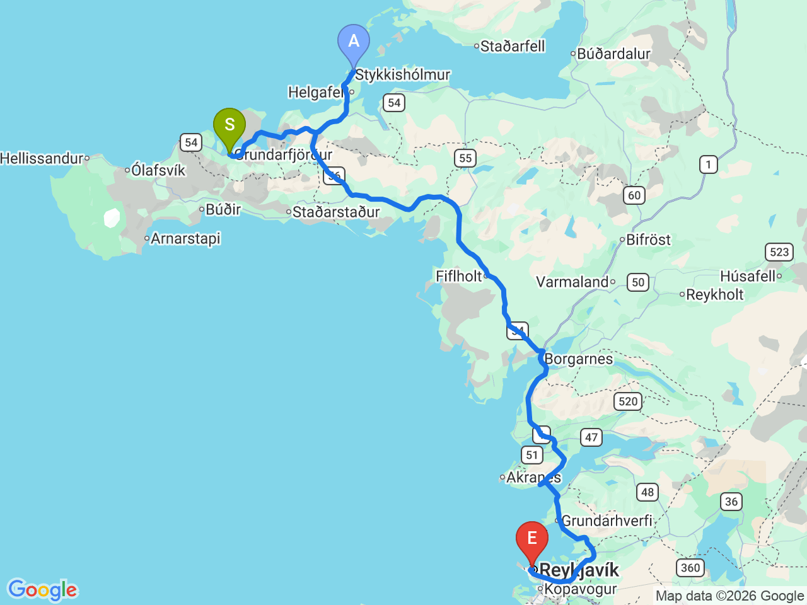

Day 15 · 2026-08-30（日）
冰島環島 Day 10/11
斯蒂基斯霍爾米燈塔・長途返回雷克雅維克
順遊小漁港燈塔後長途返回雷克雅維克，結束斯奈山半島行程，下午時間彈性可安排藍湖溫泉等活動

行程明細DAY 15
| 時間 | 地點 | 地點 (英文) | 價格 | 預計停留(分鐘) | 備註 |
|---|---|---|---|---|---|
| 08:30 | 飯店出發 | 離開斯奈山半島前，先順遊 Stykkishólmur 港口小鎮 | |||
| 08:40 | 蘇甘迪塞燈塔 | ASúgandisey Lighthouse | 免費 | 30 | 位於 Stykkishólmur 港口旁的小島，步行即可登上燈塔，俯瞰 Breiðafjörður 峽灣與港口風光 |
| 12:00 | 抵達 Reykjavík Hotel Check-in | 返回雷克雅維克，結束斯奈山半島行程；下午時間彈性，可視情況安排藍湖溫泉等行程（尚未確認） |
每日三餐
早餐
未安排
午餐
未安排
返回途中解決，餐廳尚未確認
晚餐
未安排
雷克雅維克市區解決，餐廳尚未確認
住宿資訊
本日預估開車里程
195km
The Old Post Office Guesthouse → 斯蒂基斯霍爾米燈塔 約10km → 雷克雅維克 約185km（經 54 號公路接 1 號公路，實際里程依路線而定）
該區域加油站
- N1 Stykkishólmur出發前最後補給，之後長途直達雷克雅維克